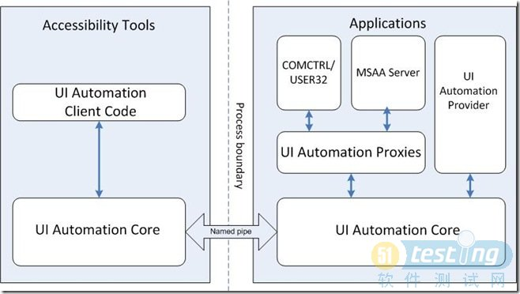

Windows Automation API自动化测试
概述
针对UI的自动化技术一般要支持下列的东西：
识别窗口：能够识别尽量多的窗口种类，支持尽量多的UI技术。比如Win32、WinForm、WPF以及WebPage（这个比较特殊，确切的说不能叫控件）的控件类型
操作窗口：对标准类型的控件方法的支持，比如按下按钮，在Listview中选择Item等
验证结果：实质就是能够拿到控件的状态以及控件相关的信息
错误恢复：这个其实属于自动化测试框架的问题，能从错误的状态恢复，并继续执行。当然写Testcaes的时候，也要保证Testcase的独立性
同步：同步在UI的自动化测试中最复杂的部分了，这个地方的工作决定了自动化脚本能否稳定的运行在在各种不同平台，不同配置的测试机上
虽然测试工具有很多，比如WinRunner、QuickTest等，我比较熟悉的只是Silktest，所以我说的很多东西都会跟Silktest来比较
我们抛开各种各样的工具本身，来看UI自动化的本质，它所用到的技术无非是下面三种：
Windows API
相关的API，FindWindow, EnumWindow,GetWindowRect, GetWindowText, SendMessage等
识 别窗口：需要通过FindWindow和EnumWindows来查找到窗口句柄，然后再调用其它 API(GetWindowText，GetWindowRect, GetWindowLong…)来获取窗口属性，以此来找到想要的控件（窗口）
操作窗口和获取属性：通过SetWindowText和GetWindowText来操作控件上显示的文字，通过 SetForegroundWindow设置顶层窗口,GetForegroundWindow获取当前的顶层窗口，类似的还有 GetActiveWindow和SetActiveWindow。其 它 操作就不一一列举了……从理论上来说，通过Windows API和Windows Message可以完成对大部分窗口（控件也是窗口，一起都是窗口）的操作，也可以获取部分控件的部分属性。但是缺点和优点也比较明显：
优点：就是看起来很高深很强大很底层，对标准Windows的控件支持还不错。
缺点：底层意味着复杂，意味着需要多层的封装，意味着 开发效率低下，也意味着对Windows API的完全依赖。如果碰到一个非标准（自定义控件），用这种方式实现的自动化工具基本上完全束手无策，即使有开发团队的支持也很难完成自动化。当然了， 算坐标，甚至用全局坐标来做也可以做，但这是野蛮做法，自动化测试的代码非常不稳定，维护和分析结果的成本也很高。
总而言之，言而总 之，没有哪个自动化测试工具完全用Windows API来实现……当然了，也不是说Windows API就没有用了，基本上所有的自动化工具都会或多或少，或直接或间接的调到Windows API，也没人敢说他不调一个Windows API就能做自动化测试工具的，最起码鼠标键盘消息的模拟他就没法弄……
MSAA - Microsoft Active Accessibility
MSAA是微软针对视力有障碍的人所提供的一个基于COM的API接口，开发人员可以利用这个技术来开发类似屏幕放大，屏幕阅读，以及语音控制等。现在很多自动化的工具除了利用window api以外，大部分也支持MSAA技术
MSAA在1997年在Windows 95中就已经包含的技术，也许你没有听说过，但是在所有的标准控件中，都实现了MSAA的接口，在微 软 所有的操作系统 中都集成了MSAA的组件，在这里，我就不讨论 MSAA的历史和相关技术了，就啰嗦一点点感慨：MSAA天生就不是设计给自动化测试的，它存在的意义在于提供一套接口，让开发人员可以方便的给残疾人开 发可以使用的软件，比如读屏程序（鼠标移动到按钮的时候，可以发出声音，辅助视力障碍的人操作电脑），从而实现微软将电脑普及到每一个家庭的梦想。
下面进入正题，虽然MSAA不是设计给自动化测试的，但是现有的所有自动化测试工具都是基于或者部分基于MSAA来实现的。MSAA很多时候直接把它叫 做IAccessible，它本身是一个COM组件，最主要是实现了IAccessible的接口，它提供了一些方法，通过这些方法，可以获取控件更详细 的信息，也可以通过一些方法对控件进行简单的操作（DoDefaultAction）。有兴趣的，可以参考Microsoft Active Accessibility
优点：比起Windows API来说，用户只需要跟IAccessible打交道，通过这个接口能获得的控件信息相对丰富很多，基本操作也不需要通过Windows Message的方式来实现。另外一个比较大的优点就是，自定义控件的支持，当然了，并不是说开发写一个自定义控件，这个控件就可以通过MSAA来识别， 而是说当开发人员在实现自定义控件的时候，可以实现IAccessible的接口，并且通过这个接口，把一些的属性和操作暴露出来，测试人员就可以将这个 控件当作标准控件，并通过MSAA来自动化。看起来麻烦了点，但是最起码对自动化自定义控件提供了可能。
缺点：天生不足，MSAA从来 就不是给自动化测试设计的，所以也不会考虑自动化测试的需求，获取到的控件信息比Windows API多，但是相对自动化测试的需求来说还是远远不够，而且仅仅支持一个基本操作，其它的操作还必须通过Windows Message。另外就是微软推出WPF以后，MSAA的局限性越加明显（这也是因为WPF的控件属性更加丰富，更具定制性，更自由，用MSAA难以描 述），这也是微软推出UIAutomation的一个的诱因。
UIAutomation
测试在各个软件公司中的地位日趋上升，而且微软自己在对测试的重视程度以及利用自动化测试方面也一直走在各个公司前面。随着WPF技术的发布，以往的Window API以及MSAA技术，对WPF控件的操作能力急剧下降，甚至无法操作WPF控件，而微软也为了增加对自动化测试的支持，发布了MSAA的升级版，并针对自动化测试进行了重新的设计，集成在.Net Framework3.0中发布，这个升级版就是UIAutomation的类库。
伴随着自动化测试的应用越来越广泛，以及WPF的发布，微软在MSAA的基础上，对MSAA进行封装，重新设计并实现了 UIAutomation的类库（.Net），微软根据自动化测试的需求，重新实现了一套自动化体系，大家可以看下边的图，这个比较准确。从此自动化测试 人员迎来了更广阔的一片蓝天（虽然还飘着点小小的乌云……），随之也有了一些小小的纠结：
a. UIAutomation （后边就简称为UIA） Vs MSAA
在UIA发布的时候，基于MSAA的自动化工具已经发展的非常成熟，比如Silktest和WinRunner… 那么大家在开发一个自己的自动化工具的时候，应该用MSAA呢，还是UIA？ 这篇文章可以给一个两者的大概关系：UI Automation and Microsoft Active Accessibility。 按照微软的想法和设计，UIA是要取代MSAA成为自动化测试的标准类库，并且对WPF来说，UIA才是一等公民。从架构上来讲，UIA在针对标准控件的 时候，通过UI Automation Proxy调用了MSAA Server，基本上覆盖了MSAA的功能：

从上边的图来看，从理论上来说，UIA应该是可以完全替代MSAA的，但是理想和现实往往是有很大差距的，从现实来看，UIA不能完全替代 MSAA，因为一个经典的UIA的Exception：
Exception
Time Stamp : 10/9/2009 4:37 PM
Element : Element details not available.
Name : TreeValidationException
Message : UI Automation tree navigation is broken. The parent of one of the descendants exist but the descendant is not the child of the parent
Stack Trace : at UISpy.Base.Tree.BuildTree(AutomationElement element)
at UISpy.Base.Tree.BuildTreeAndRelatedTrees(AutomationElement element)
只要用过UI Spy（UIA的一个小工具，可以看到整个UIA的控件树，类似AccExplorer）的基本上都会碰到，当移动鼠标并识别某个控件时，就有可能看到上 边的Exception，意思是说，UIA在构造UI树的时候失败，鼠标所指向的控件不合法。但是如果你用AccExplorer来看，就完全没有这个问 题，控件树的结构也比较完整。就意味着，你无法通过遍历控件树来找到想要的控件，因为控件根本就没有构造在UIA的控件树上，当然也无法对它进行任何操作 （当然，如果你用屏幕坐标，然后通过AutomationElement.FromPoint来做，还是可以做的，但是请注意，你使用了屏幕坐标）。在一 些小的程序上，可能不是很明显，如果是大的项目，并且有很多自定义控件的情况下，这个问题就会被放大，这个Exception就像一个黑洞一样会吞掉很多 控件，也意味着你需要在很多地方去写代码来绕过这个问题，同时也带来了维护成本的大幅提高。
b. Managed vs Unmanaged
UIA的类库是作为.Net3.0的一部分发布，这就意味着UIA只能用.Net的语言来写，并且运行在.Net托管堆中，性能就成为其中一个 问题，虽然我不认为是很大的一个问题，一般来说自动化测试程序在等待UI反应的时间要远远多于这一点点的性能差异。
c. In-Process Vs Out-Process
尽管大部分的自动化测试工具和测试代码都是运行在进程外，但是还是有一些特殊的应用需要在进程内进行，比如在API测试中，需要进行UI交互， 为了保证API测试的自动化，就必须在进行内写自动化脚本。MASS是支持进程内操作的，但是UIA没有宣布支持，在进程内使用时会有很大的性能问题，也 可能导致一些未知的问题。
d. 自定义控件的支持
这个UIA就有先天优势了，但也需要开发人员的支持，或者有能力的测试人员也可以自己实现，这就是UIA中的两种Provider，一种内建， 一种外置，只要实现了Provider，自定义控件就可以完美的支持UIA。当然了，对标准控件来说，UIAutomation发布在Win32控件和 WinForm的控件之后，所以微软就帮我们实现好了对应这些控件的Client Provider，所以UIA对于以前的Win32和Winform控件也是完美支持的，对WPF的标准控件就更不用说了，天生就是带有Provider 支持的。具体的我就不展开了，大家有兴趣可以看这个：UI Automation Providers Overview
Windows Automation API 3.0
这个并不是新的自动化测试的技术，而是对UIAutomation（UIA）以及MSAA的升级，更准确的说，是UIA SP1，但名字直接跳到3.0，不知道1.0和2.0是不是指的MSAA的版本，所以大家看到这个名字以后不要晕…… 顺便唠叨一下微软的东西，貌似某个人说过，微软的东西都是在没有做完的时候就发布出去，然后过一段儿时间马上发布Service Pack，所以微软的产品一定要等到SP1以后才能用，这个相当准确:）更详细的介绍大家可以看这个Blog：Microsoft Windows UI Automation Blog
我在这里就大概说一下，Windows Automation API 3.0是伴随着Windows 7发布的，也就是说Windows 7本身就集成了Windows Automation API 3.0所以的组件和功能，再换一句话说就是Windows 7就自动化测试的支持将会更好。最主要的更新如下（与上边UIA的几个纠结对应）：
a. 更新以后，以前Tree断掉的问题基本上修复了，我在Windows 7上测试的结果来看，没发现问题
b. 新增了Unmanned API和COM API，这样直接用Native的C++也可以来开发基于UIA的自动化工具
c. 有了COM API以后，看起来In-Process也不是问题了
d. …
Windows Automation API 3.0看起来很美，基本上都解决了我上边说的UIA的问题，让人感觉到这个版本的UIA才是真正可以替代MSAA的东西。但是这个Windows Automation API也让我纠结了好一阵子，差一点就想放弃UIA，重新把Code转移到MSAA上，最主要的原因是，Windows Automation API 3.0只支持Windows 7，不能安装在XP/Vista上，后来经过和他们的斗争，有了下边的Update： http://social.msdn.microsoft.com/Forums/en-AU/windowsaccessibilityandautomation/thread/46e83c55-47b8-4874-9222-7ce2fa58751d
所以，对Windows Automation API 3.0的当前情况就是：
如果你仅仅在Windows 7 上做自动化测试，那么恭喜你，你可以使用Windows Automation API 3.0的所有功能，既可以用Managed code来做，也可以用Unmanaged code来做。
如果你想在Vista上用，装了那个更新以后，应该就可以了，我没试过……
如果你想在XP/Server2003上使用，你需要等到今年年底的某个时候（快到了:)）
总之，在Windows 7上，怎么做都行（Managed/Unmanned），在XP/Vista/Server2003上，只能用.Net，而且还会碰到有些控件不在控件树 上。所以，大家跟我一起期待年底的更新吧……
MSAA原理
基础
Microsoft?Active Accessibility 是一种相对较新的技术（1.0版在1997年5月份推出）。目的是方便身患残疾的人士使用电脑——可用于放大器、屏幕阅读器，以及触觉型鼠标。同样还可以用来开发驱动其它软件的应用程序，其Ｄ庥没淙氲哪芰τ绕涫屎?测试软件的开发??BR>Active Accessibility 的主要思想是提供一种以程序方式访问UI元素信息或操作这些UI元素的功能。支持这种功能的 UI(User Interface) 元素是可访问的。在大多数情况下，这意味着一个UI元素支持 IAccessible 接口。你也可以说在 Active Accessibility 的世界里，一个可访问的UI元素可表示为 IAccessible 接口。
每当你需要得到有关一个元素的信息，在其上执行一个动作，或者使用 Active Accessibility 做其它的什么，你通常需要通过使用代表这个元素的 IAccessible 接口的一种方法或者属性来引用这个元素。
Active Accessibility 原理
Active Accessibility? 的核心功能由 OLEACC.DLL 提供的。每次当你调用一个函数来返回一个 IAccessible 接口指针，其与一个UI元素相对应，OLEACC.DLL就检查此元素是否内在支持 IAccessible。内在的支持意思是该元素的 IAccessible 是用程序实现的。
当一个UI元素不能内在的支持 IAccessible 时，OLEACC.DLL 检查该元素的Windows 类名。如果该类是一个 USER 或者 COMCTL32 支持的类，OLEACC.DLL 就创建一个代理为 UI 元素实现 IAccessible 接口。大多数--但不是全部--COMCTL32 控件都具有被 OLEACC.DLL 支持的 IAccessible 接口。
内在支持IAccessible 的 UI 元素的例子是定制控件，owner-drawn 和无窗口的控件。因为开发者创建的程序包含这些UI元素，同样就实现了这些元素的接口，他们有责任为这些方法和属性提供正确的支持。
如果你用标准控件，这也意味着你不必重写你的应用，这些应用自动与Active Accessibility兼容。Active Accessibility名字是基于 Win32 控件的名字给出的，角色基于控件的功能定义。
如何得到IAccessible 接口指针
每当你需要有关一个元素的信息，在其上执行一个动作，或者使用 Active Accessibility 做其它的什么，你只需要通过使用代表这个元素的 IAccessible 接口的一种方法或者属性来引用这个元素。
有几种方法取得代表一个可访问UI 元素的IAccessible 接口的指针。最普通的方法是使用 Active Accessibility 提供的一种函数，例如 AccessibleObjectFromPoint，AccessibleObjectFromWindow 等等，或者使用 IAccessible 支持的方法，例如 get_accChild，get_accParent。
IAccessible 接口支持允许你得到各 UI 元素信息的属性，而其中对于例子程序最重要的属性是名字、角色和状态。
Active Accessibility SDK提供了一些方便的工具，其中的 Object Inspector 能显示光标指向的UI元素的属性。Object Inspector 显示了Active Accessibility 的世界如何因为具有支持一个选定窗口内的 IAccessible 接口的控制而变得通用了。除了搜索有关元素的信息和通过IAccessible 接口控制元素以外，Active Accessibility? 还有两种对于例子程序非常有用的特性：监视UI元素发生的事件和模拟键盘、鼠标输入。由可访问的元素激发的事件称为 WinEvents，当可访问的元素创建或者名字、状态、位置或者键盘焦点发生变化时，就激发这些事件（事件机制类似于标准的 Windows 的 hook 机制。监视事件我们将在后面介绍。）。这些事件的清单见文件 WINABLE.H。每个事件的名字以 EVENT_OBJECT 或 EVENT_SYSTEM 开始。
好，我们言归正传，来介绍如何得到 IAccessible 接口指针。前面已经提到过 AccessibleObjectFromWindow 这个 Active Accessibility 提供的函数，从字面上大家可以看出是通过窗口来得到对应的 IAccessible 接口指针。
因为 IAccessible 接口的数量比窗口要多（因为大多数--但不是全部--COMCTL32 控件都有被OLEACC.DLL 支持的IAccessible 接口。），使用 Win32 函数来搜索一个窗口将会比使用 Active Accessibility 树搜索与该窗口相应的 IAccessible 接口要占用少得多的时间。这就意味着为了提高性能，你应该使用FindWindow 和 EnumWindows 这样的 Win32 函数来找到与希望的UI元素最接近的窗口。当然，在权衡 Win32 函数和 Active Accessibility 函数时，上面的规则只是使用它们的一般标准而不能盲目的遵照执行，重要的是理解它们的本来意义。
MSAA实例
功能：对鼠标监视，当左键单击某个文件选中时，获得该文件文件名称。
在windowsXP下完美实现的思路是：
1、下鼠标钩子，获得鼠标左键clickup事件。
2、使用FindPointWindow，获得鼠标位置窗口句柄。
3、使用SendMessage，向该窗口（SysListView32）发送信息，获得选中文件序号及文件名称。
该程序在WindowsXP下运行正常，可以正确取出文件名。在Windows7和Server2008的桌面（也是SysListView32）也工作正常。
但是windows7和Server2008的文件浏览窗口时改用了DirectUI，无法使用SendMessage获得相应信息。
针对DirectUI,改用IAccessible接口遍历并获得指定句柄的窗口内鼠标选中的文件。
程序getCurrentFileName，入口是指定窗口的句柄。
但是很奇怪，该程序如果从程序本身的窗体上获得句柄参数，能正常执行，找到选中文件（如从一个textbox中获得句柄值）。但是如果是用鼠标钩子和FindPointWindow获得窗口句柄值，自动调用getCurrentFileName，就无法找到选中的文件。
通过调试，可以看到AccessibleObjectFromWindow这句在两种情况下执行结果不一样。
#Region "使用IAccessible读取被选中的文件名称（通用于SysListView32和DirectUI两种控件）"
<summary>
从Windows系统窗口中读取被选中的文件名称，需要考虑两种控件。
第一种是SyslistView32，WindowsXp桌面和文件浏览窗口，Windows7、Server2008的桌面都是这种控件
syslistView32控件本身的Role值为33【列表】，每个文件Role值为34【列表项目】，ObjectType为Simple Element
第二种是DirectUI，Windows7、Server2008的文件浏览窗口都是这种控件
DirectUI控件本身内部较为复杂，文件浏览窗口处于DirectUI较深的层次，文件浏览窗口Role值为33【列表】，每个文件Role值为34【列表项目】
但是特别注意，这里的文件的ObjectType为Container。
两种控件都可以使用IAccessible自动化接口取访问，并且层层深入的遍历。但是特别注意，IAccessible不能进入ObjectType为Simple Element的层。
也就是说使用IAccessible不能用AccessibleChildren进入SyslistView32的子层取遍历控件，这样会报错。这可能是自己对IAccessible接口工作原理还不是很清楚而导致的。
注：这两种控件可以使用工具AccExplore进行研究和查看。
关于IAccessible 接口/子ID对
让我们来考虑这样一个控件，他支持 IAccessible 接口并且包含一些子控件，比如 listbox 就包含很多 items 。有两种方法让他可以被访问：第一种，提供listbox的 IAccessible 接口和每一个 item 自己的 IAccessible 接口。另一种是只提供一个控件的 IAccessible 接口，这个接口能够提供基于某种识别方法来访问每一个子控件的功能。
第一种方法，需要为这个控件和每一个子控件创建单独的 COM 对象，这会比第二种方法（每一个子控件不支持自己的 IAccessible 接口，而是通过父接口来访问）增加内存消耗。第二种方法里，通过增加一个参数--子ID--同父的IAccessible 接口一起表示这个子控件。子ID 是一个 VT_I4 型的 VARIANT 值，包含一个由程序决定的独特的值，或只是一个子控件的序号。序号意味着第一个子控件的ID为1，第二个子控件的ID为2，依次增长！
这样，如果一个子控件不支持自己的 IAccessible 接口，而其父控件支持，那么这个子控件可以用它的父控件的 IAccessible 接口/子ID 对来表示。通常，一个支持 IAccessible 接口的父UI元素也是通过这样的 IAccessible 接口/子对表示的，这时候其子ID号为 CHILDID_SELF （就是0）。
记住，子ID号总是相对于 IAccessible 接口的。例如，一个可访问的元素可以同相对于其父 IAccessible 接口的一个非子 CHILDID_SELF 的 ID 及其父IAccessible 接口表示，如果他支持 IAccessible 接口，此元素的子ID就是相对于自己 IAccessible 接口的CHILDID_SELF。
呵呵，翻译的有点别扭，意思就是说，如果这个控件支持 IAccessible 接口，那么它的子ID就是0（CHILDID_SELF），可以用它自己的 IAccessible 接口和0这个对来表示这个控件。如果控件不支持 IAccessible 接口，就用它父控件的 IAccessible 接口，和一个相对于父 IAccessible 接口的子ID来表示。哎呀！！不知道说明白没有。郁闷！！！！
MSAA缺点
MSAA技术涉及了COM技术，但其本意是实现平台无关性（类似SOA的观念），只要第三方的软件遵循相应的标准，用户就可以同样的方式访问不同的接口。但是并非所有软件都完全实现MSAA标准。
一般程序的UI技术：浏览器（网页排版引擎），资源管理器（普通user32/gdi（+）），QQ（DirectUI）。
腾讯QQ并没有完全实现IAccessible接口，如AutomationID为空，button的ClickablePoint为"(null)"，所以不能通过MSAA接口完全控制QQ自动化，只能读取一些UI界面公开的信息，如读取文本等。
如IE和Gecko内核的浏览器获取网页内容的方式有一个缺陷：对窗口句柄的获得依赖与窗口类型，如果某些浏览器版本升级或改版后导致窗口类型变化，则需要修改原先的代码，对新的浏览器进行支持，随着各种浏览器的不断升级改进，可能会造成代码的不断扩充，导致程序臃肿不堪。
版本
微软MS Active Accessibility版本说明
| 版本 | 说明 |
| 1.0 | Original add-on release for Windows 95. The RDK was supported only in the English version of the operating system. (1997) |
| 1.1 | Included in Windows 98. |
| 1.2.x | First revision of MSAA that was made available to both English and international versions of Windows. (1998) |
| 1.3.x | Additional support added for more languages. Introduced satellite DLL (oleaccrc.dll) for its international text resource library. Later the system components were integrated into Windows NT 4.0 Service Pack 6 and beyond, Windows 98, Windows 2000 and Windows Me. (1999) |
| 2.0 | First major revision of MSAA, adding support for Dynamic Annotation and MSAA Text. This version was integrated into Windows XP. Minor revisions have been made to the MSAA framework within subsequent versions of Windows. The 2.0 version of the RDK was made available to older platforms (Windows 95, 98, 2000, Me, NT) in 2003. (2000–2008) |
| 3.0 | The framework has become part of the Windows Automation API 3.0, which is integrated into the Windows platform accessibility API set by MSAA and UI Automation (UIA). Windows Automation API is included in Windows 7 and available for Windows Vista and XP (2009) |
参见
For keys, try CodeProject:
http://www.codeproject.com/KB/cpp/sendkeys_cpp_Article.aspx
And messages:
http://www.codeproject.com/KB/threads/sendmsg.aspx
相关Link：
http://msdn2.microsoft.com/en-us/library/ms971350.aspx
http://en.wikipedia.org/wiki/Microsoft_Active_Accessibility
相关链接：
http://en.wikipedia.org/wiki/Microsoft_UI_Automation
http://msdn2.microsoft.com/en-us/library/ms747327.aspx